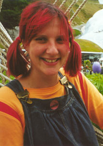

Heidi's Page
Updated 31/07/2001
|  | Heidi is younger than her husband.
She spends her daytimes looking after Indigo, and growing a new bub-bub in her tummy. She hopes normal life will resume shortly, but doesn't hold out much hope. Below is a summary of her current thinking: |
Places
I haven't been to too many places, though I'd really like to go to
New York. The place I do like most of all, though, is
Tulum in the Yucatan (in
Mexico). I think I could live there happily for a while. Of the places I've lived
I love Brighton most of all - I was able to make the
most of it while I was there, and actually had a life (see above). But otherwise, anywhere
lush, flower-infested
and rabbit-friendly will do.
Clothes
Charity shops are the best places to get clothes. I think of
myself as a retroHippySpaceChick.
I'm torn between being a hippy or a space
commander, probably not a choice many people face in their lives. I'd like to cruise round
in my silver boots being very pacifist, although people aren't always understanding.
Things
I love wild flowers which most people seem to know as weeds.
They should be left to grow, rather than be mown to shreds every week. My favourites are
daisies and montbretia.
I also love obscure Japanese tat, especially
cartoons and fashion. the more
hair slides I have, the happier I am (and the more I want).
Eating and Drinking
Did someone just say Summer Pudding?
A Homer Simpson style drool will follow. Repeat for Frascati,
Guacamole and all things limey
and that about covers it.
TV
I have no time for TV. Best. But when I was able to watch it I liked
Father Ted, The Fast Show
and Ali G. I would say I liked
Gardening Programmes, but they're all too design and not enough
plants.
Music
Here's a list of people and musical-things I like, and my fave songs by them:
Kitsch
I love all kitsch, but most of all 70s retro.
I find Charity Shops are the best places to find my favourite things, the truly revolting
brown and orange plastic items. My best buys so far are
a set of imitation wood egg cups, and my beloved
orange tube lamp.
Books
I really enjoy John Irving's books, which is handy
as Duncan keeps reading them to me in the evenings. Other than that, I like a lot
of modern fiction, though not the sort of book with a title based on the current most popular
girls names. I really liked Nyphomation by
Jeff Noon but not his other books so much, and I also like much of
Martin Amis' writing.
Back to the main page.